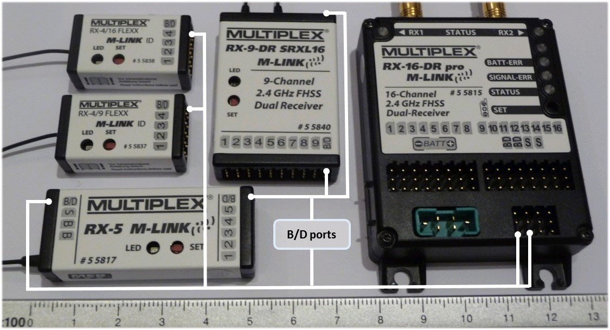
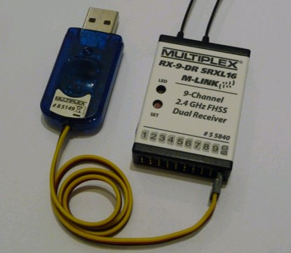

[copywiki destination=”plane,copter,rover,blimp”]¶
SRXL R/C Receivers¶
This article explains how to use SRXL receivers with ArduPilot.
Overview¶
SRXL is a serial protocol which transfers control data of a R/C receiver to an autopilot or other device. In case of ArduPilot, the R/C receiver transfers servo outputs as a sum signal. ArduPilot is decoding the SRXL datastream of the R/C receiver depending on the SRXL variant identified and extracts the servo output signals. This technique enables the user to connect a SRXL R/C receiver to the pixhawk using a single cable connection similar to a PPM sum signal.
Note
The following SRXL variants are supported by ArduPilot
JR propo X.BUS Mode B
How to use MULTIPLEX SRXL Receivers¶
MULTIPLEX receivers supporting SRXL¶
All MULTIPLEX receivers which are telemetry capable can be configured to send out a SRXL signal. An exception are the MULTIPLEX FLEXX receivers, which are sending the SRXL signal by default without any receiver configuration required.
SRXL signal output at receivers B/D port¶
The SRXL signal is emitted by the B/D port(s) of the receiver.
{kind=link}
The number of active channels on the SRXL signal are depending on the type of receiver:
RX-4/9 FLEXX, # 55837 , 4 servo sockets, 9 channels active on SRXL signal
RX-4/16 FLEXX, # 55838 , 4 servo sockets, 16 channels active on SRXL signal
RX-5, # 55817 , 5 servo sockets, 5 channels active on SRXL signal
RX-7, # 55818 , 7 servo sockets, 7 channels active on SRXL signal
RX-7-DR, # 55811 , 7 servo sockets, 7 channels active on SRXL signal
RX-7-DR compact, # 55819 , 7 servo sockets, 7 channels active on SRXL signal
RX-9-DR, # 55812 , 9 servo sockets, 9 channels active on SRXL signal
RX-9-DR compact, # 55820 , 9 servo sockets, 9 channels active on SRXL signal
RX-9-DR SRXL16, # 55840 , 9 servo sockets, 16 channels active on SRXL signal
RX-9-DR pro, # 55813 , 9 servo sockets, 9 channels active on SRXL signal
RX-12-DR pro, # 55814 , 12 servo sockets, 12 channels active on SRXL signal
RX-12-DR compact, # 55821 , 12 servo sockets, 12 channels active on SRXL signal
RX-16-DR pro, # 55815 , 16 servo sockets, 16 channels active on SRXL signal
How to configure a MULTIPLEX receiver for SRXL signal output¶
To configure the receiver to send out SRXL signal you need a USB to UART Adapter.
{kind=link}
For this purpose MULTIPLEX offers the plug-and-play PC-cable # 85149 which contains a SILABS CP2102 Single-chip USB to UART Bridge.
To do the configuration follow the following steps:
Download and install MULTIPLEX Launcher Software
With Transmitter switched off, connect PC-cable # 85149 to a B/D port of the receiver and connect a sufficient power supply to any of the servo sockets.
Start the MULTIPLEX Launcher Software and connect PC-cable # 85149 to the PC.
MULTIPLEX Launcher will detect the connected device automatically and will open the “RX/RF DataManager”-Window.
{kind=link}
In the “RX/RF DataManager”-Window click “Options” and the “RX Options”-Window will be opened.

In the “RX-Options” Window scroll down to “More Settings”. In the “More Settings” section double-click “* Options…” to open the “More setting”-Window and select “Serial servodata SRXL” as data output at B/D port. Close the “More setting”-Windows by clicking “Accept”.
{kind=link}
Upload data to the receiver by clicking “Send data” in the “RX Options”-Window.
Note
There will be no active feedback of the receiver to show you that data are stored successfully. But no worries – they will be stored reliably.
To complete the SRXL activation on B/D port click “Close” in the “RX Options”-Window and “Close” in the “RX/RF DataManager”-Window.
To reboot the receiver, disconnect PC-cable and power supply from the receiver.
Receiver is now configured for SRXL output.
Connect receivers to the autopilot as described here.
Test and adjust servo channel assignments in Mission planner if required. MULTIPLEX radios without free servo assignment (e.g. Cockpit SX) have the following standard servo assignment:
{kind=link}